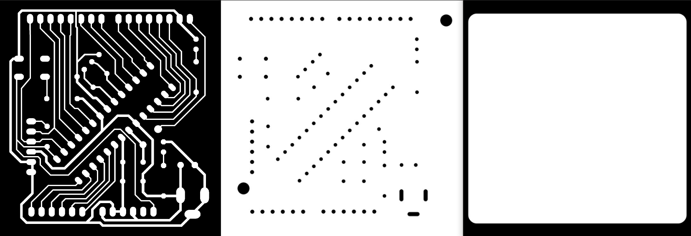
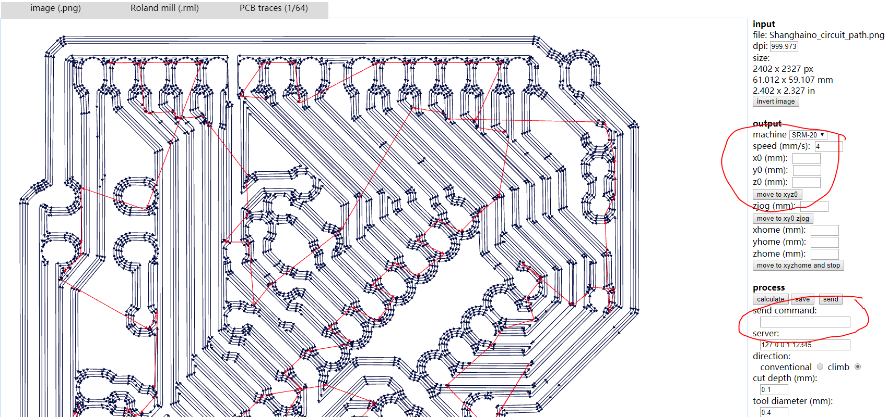
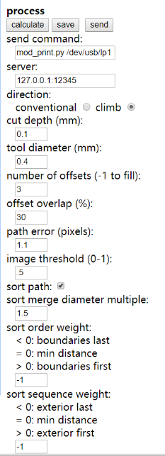
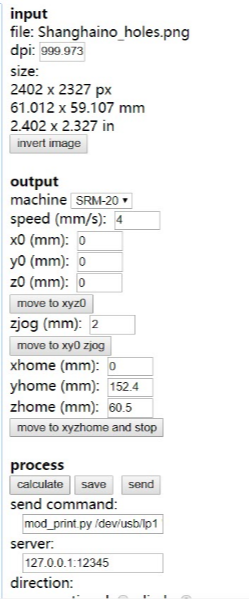
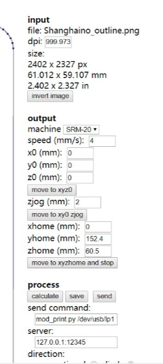
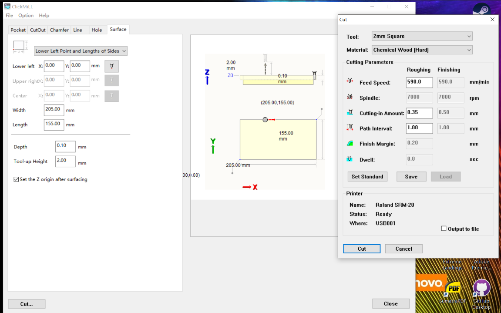
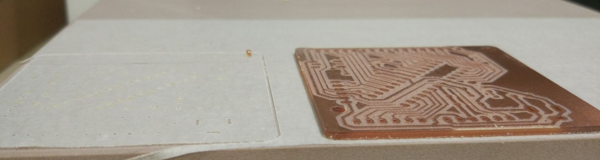
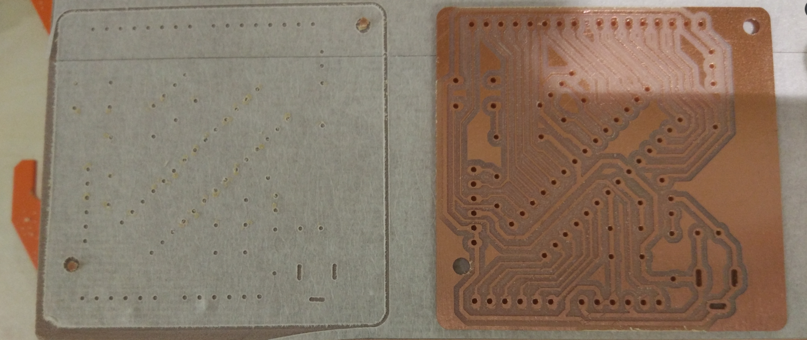

Doucments on the sixth week:
By using the picture of the Shanghaino circuit board. I send them to www.fabmodules.org one by one.
When using the web page, I made a mistake which let me know the necessary sequence of the operation. At first, I click "input format" and import the picture. Then, the "output format". But then, I was too eager to choose the "machine" before clicking the "process". After I did what needs to be done in the "process" part, there is no offset occuring, which really comfused me.
This is just a remind, in case someone like me will do such a "interesting" thing, which cost me about 2 hours to discover the problem. Then, is the basic settings about the output rml file.
the settings for circuit path
the settings for drilling holes
the settings for outline
Before milling on the circuit board, the padding material has to be made flat. The settings are down below:
BTW, there is also a reminding: DO NOT set the Depth, which should be 0.00mm as default. Or, the miller will make a deeper milling after it made the plane flat, which is not really necessary if you set the origin z coordinate to the lowest point on the padding material.
By finished the planing...
The circuit board is made thanks to the powerful milling machine:
 